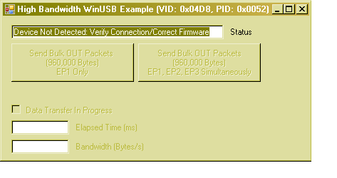
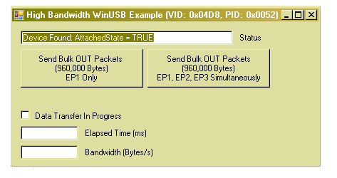

Getting Started: Running the “Device
– WinUSB – High Bandwidth Demo”
Configuration
1: PICDEM™ FS USB
Configuration
2: PIC18F87J50 PIM
Configuration
4: Low Pin Count USB Development Kit
Configuration
5: PIC24F Starter Kit 1
Configuration
6: PIC18F46J50 Full Speed USB Demo Board
Configuration
7: PIC32 USB Starter Board
Configuration
8: PIC18F Starter Kit
Configuration
1: PICDEM FS USB
Configuration
2: PIC18F87J50 PIM
Configuration
4: Low Pin Count USB Development Kit
Configuration
5: PIC24F Starter Kit 1
Configuration
6: PIC18F46J50 Full Speed USB Demo Board
Configuration
7: PIC32 USB Starter Board
Configuration
8: PIC18F Starter Kit
Required Hardware:
To run this project, you will need one of the
following sets of hardware:
Configuration 1: PICDEM™ FS USB
PICDEM
FS USB (DM163025)
Configuration 2: PIC18F87J50 PIM
PIC18F87J50
Plug-In-Module (PIM) (MA180021)
Configuration 3: Explorer 16
Explorer
16 (DM240001)
USB
PICtail™ Plus Daughter Card (AC164131)
And one of the following PIMs
PIC24FJ64GB004
Plug-In-Module (PIM) (MA240019)
PIC24FJ256GB110 Plug-In-Module (PIM) (MA240014)
PIC32MX USB Plug-In-Module (PIM) (MA320002)
Configuration 4: Low Pin Count USB Development Kit
Low
Pin Count USB Development Kit with PICKit 2 Debugger/Programmer (DV164126)
or without Debugger/Programmer (DM164127)
Configuration 5: PIC24F Starter Kit 1
PIC24F
Starter Kit 1 (DM240011)
Configuration 6: PIC18F46J50 Full Speed USB Demo Board
PIC18F46J50
Full Speed USB Demo Board (MA180024)
Configuration 7: PIC32 USB Starter Board
PIC32 USB Starter Board (DM320003)
Configuration 8: PIC18F Starter Kit
PIC18F Starter Kit (DM180021)
Configuring the Hardware:
This
section describes how to set up the various configurations of hardware to run
this demo.
Configuration 1: PICDEM FS USB
Configuration 2: PIC18F87J50 PIM + HPC Explorer
Configuration 3: PIC24FJ256GB110 PIM + Explorer 16
Configuration 4: Low Pin Count USB Development
Kit
Configuration 5: PIC24F Starter Kit 1
Configuration 6: PIC18F46J50 Full Speed USB Demo Board
Configuration 7: PIC32MX USB Starter Board
Configuration 8: PIC18F Starter Kit
Configuration 1: PICDEM FS USB
1)
If using the PICDEM FS USB Demo Board, no hardware related configuration or
jumper setting changes should be necessary.
The demo board need only be programmed with appropriate firmware.

Configuration 2: PIC18F87J50 PIM
1)
Short JP4 on the PIC18F87J50 PIM. This
allows the demo board to be powered through bus power.

2)
Short JP1 such that the “R” and “U” options are shorted.

3)
Short JP5. This enables the small
surface

Configuration 3: Explorer 16
1)
Before attaching the PIC24FJ256GB110 PIM to the Explorer 16 board, insure that
the processor selector switch (S2) is in the “PIM” position as seen in the
image below.
.JPG)
2)
Short the J7 jumper to the “PIC24” setting
.JPG)
3)
Before connecting the PIC24FJ256GB110 PIM to the Explorer 16 board, remove all
attached cables from both boards.
Connect the PIC24FJ256GB110 PIM to the Explorer 16 board. Be careful when connecting the boards to
insure that no pins are bent or damaged during the process. Also insure that the PIM is not shifted in
any direction and that all of the headers are properly aligned.
3a)
If using the PIC24FJ64GB004 PIM, please insure that the programming port
switch is switched in the PGX1 direction.

4) On the USB PICTail Plus board, short jumper
JP1. Remove all other shorts on the
board.
.JPG)
5) Connect the USB PICTail Plus board to either
of the female PICTail Plus connectors or on the card edge connector (J9) at the
edge of the Explorer 16 board.
Note: When using the HID bootloader for PIC32, it is
important to modify the procdefs.ld file to relocate the sections of code that
will hold the bootloader and those sections that will hold the user
application. Example modified
procdefs.ld files have been provided with each project. This file is currently named
“Procdefs.ld.boot”. When using the
example project with the bootloader it is required to remove the “.boot” section
of the file. This will allow MPLAB to
use this file instead of the default linker file. Once the linker file is renamed, however, the
project will no longer work without the bootloader. Please rename the file in order to get the
project working again with PIC32.
Configuration 4: Low Pin Count USB Development Kit
1) Short pins 2 and 3 of J14. Make sure J12 is left open.

Configuration 5: PIC24F Starter Kit 1
The PIC24F Starter Kit does not require any hardware setup
to run this demo. This demo does,
however, require the user to change the default selected device in the project
before compiling the demo.
1) Open the associated project file
for C30
2) In MPLAB Select
“Configure->Select Device”
3) In the device list box in the top
left corner of that window, select “PIC24FJ256GB106”
Configuration 6: PIC18F46J50 Full Speed USB Demo Board
1) Short JP3 to allow the board to
be powered from the USB.
.jpg)
Configuration 7: PIC32 USB Starter Board
No specific hardware configuration is required for this demo.

Configuration 8: PIC18F Starter Kit
No specific hardware configuration is required for this
demo.

To
run this project, you will need to load the corresponding firmware into the
microcontroller. Precompiled Demos are
available in the “<Install Directory>\USB Precompiled Demos”
folders. Each demo hex filename should
include information regarding the hardware platform it is compiled for. For this demo, select the appropriate “WinUSB
– High Bandwidth Demo” hex files that matches the
hardware configuration that you plan to use.
For
more information about how to load a precompiled project, please see the
“Getting Started – Loading a precompiled demo” guide.
The
source code for this demo firmware is available in the “<Install Directory\
USB Device - WinUSB – High Bandwidth Demo\WinUSB High Bandwidth Demo - Firmware” directory. In this directory you will find all of the
user level source and header files as well as project and workspace files for
each of the hardware platforms.
Please
note that when using either the C30 or C32 demo projects you will be required
to select the correct processor for the demo board.
1) Open the associated project file
2) In MPLAB Select
“Configure->Select Device”
3) In the device list box in the top
left corner of that window, select the desired device.
For
more help on how to compile and program projects, please refer to the MPLAB® IDE
help available through the help menu of MPLAB (Help->Topics…->MPLAB IDE).
This
demo uses the selected hardware platform as a WinUSB class USB device. WinUSB is a vender specific driver produced
by Microsoft for use with Windows® XP service pack 2 and Windows Vista®
operating systems. This driver allows
users to have access to interrupt, bulk, and control transfers directly.
The
HighBandwidthWinUSB.exe program, and the associated firmware demonstrate how to
use the WinUSB device drivers for USB Bulk data transfers. Total Time taken to
transmit the data & data transmission rate (Bytes/Sec) is shown in the GUI
once the data transmission of 9,60,000 bytes is completed from the PC side.
Before you can run the HighBandwidthWinUSB.exe executable,
you will need to have the Microsoft® .NET Framework Version 2.0 Redistributable
Package (later versions probably okay, but not tested) installed on your
computer. Programs which were built in
the Visual Studio® .NET languages require the .NET redistributable package in
order to run. The redistributable
package can be freely downloaded from Microsoft’s website. Users of Windows Vista® operating systems
will not need to install the .NET framework, as it comes pre-installed as part
of the operating system.
The
source code for HighBandwidthWinUSB.exe file was created in Microsoft Visual
C++® 2005 Express Edition. The source
code can be found in the “<Install Directory>\ USB Device - WinUSB - High
Bandwidth Demo\WinUSB High Bandwidth Demo - PC Application - MS VC++ 2005
Express” directory. Microsoft currently
distributes Visual C++ 2005 Express Edition for free, and can be downloaded
from Microsoft’s website. When downloading
Microsoft Visual C++ 2005 Express Edition, also make sure to download and
install the Platform SDK, and follow Microsoft’s instructions for integrating
it with the development environment.
It
is not necessary to install either Microsoft Visual C++ 2005, or the Platform
SDK in order to begin using the HighBandwidthWinUSB.exe program. These are only required if the source code
will be modified or compiled.
To
launch the application, simply double click on the executable
“HighBandwidthWinUSB.exe” in the “<Install Directory>\USB Device - WinUSB
- High Bandwidth Demo” directory. A
window like that shown below should appear:

If
instead of this window, an error message pops up while trying to launch the
application, it is likely the Microsoft .NET Framework Version 2.0
Redistributable Package has not yet been installed. Please install it and try again.
As
configured by default, the application is looking for HID class USB devices
with VID = 0x04D8 and PID = 0x0052. The
device descriptor in the firmware project meant to be used with this demo uses
the same VID/PID. Once the device flashed with corresponding firmware is
connected to the PC, the below window appears:

Hitting
the “Send Bulk OUT Packets” tab will transmit 960,000 bytes of data on the USB
bus to the corresponding endpoints ( EP1 Only or EP1,EP2, EP3 Simultaneously
depending upon the button pressed in the GUI). Elapsed Time (ms) &
Bandwidth (Bytes/Sec) are displayed in the GUI once the data transmission is
complete.
Trademarks:
The Microchip name and logo, the Microchip logo, MPLAB, and PIC
are registered trademarks of Microchip Technology Incorporated in the
PICDEM and PICTail are trademarks of Microchip Technology Incorporated
in the
Microsoft, Windows, Visual Studio, Visual C++, and Windows Vista
are either registered trademarks or trademarks of Microsoft Corporation in the